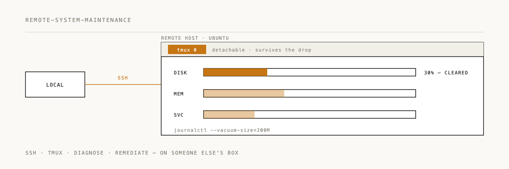

Remote system maintenance

Structured procedures for diagnosing and maintaining remote Linux systems via SSH/tmux.
Installation
/plugin marketplace add 2389-research/claude-plugins
/plugin install remote-system-maintenance@2389-research
What this plugin does
Walks you through system diagnostics and cleanup on remote Linux boxes, focused on Ubuntu/Debian. Three diagnostic phases, a seven-stage cleanup sequence, and documentation templates so you actually record what you did. Expect to recover 2+ GB in a thorough session.
When to use
- Performing system maintenance on remote Linux servers
- Recovering disk space on Ubuntu/Debian systems
- Running diagnostics on remote systems
- Cleaning up package caches, journals, or snap revisions
Quick example
# Phase 1: Initial diagnostics
hostname && df -h && free -h && uptime
ps aux | head -20
ps aux | awk '$8 ~ /Z/ {print}' # Zombie detection
# Phase 2: Log review
journalctl -p err -n 50
journalctl --disk-usage
# Phase 3: Cleanup sequence
apt update && apt upgrade -y
apt autoremove -y && apt clean
journalctl --vacuum-time=7d
# Snap cleanup (biggest wins!)
snap list --all | awk '/disabled/{print $1, $3}'
snap remove package-name --revision=123
# Document: hostname, before/after disk, MB freed per category
Three-phase approach
Phase 1: Initial diagnostics
Capture baseline system state:
- Hostname and system identification
- Resource utilization (disk, memory, CPU)
- Process status and load
- Zombie process detection
Phase 2: System log review
Examine system health:
- Recent error messages in system logs
- Journal disk consumption
- Critical service status
- Authentication and security events
Phase 3: Package assessment
Find maintenance opportunities:
- Upgradable packages
- Orphaned configurations
- Unused dependencies
- Package cache size
Ubuntu/Debian cleanup sequence
Run these seven stages in order:
- Package cache refresh --
apt update - System upgrades --
apt upgrade - Orphan removal --
apt autoremove - Cache purge --
apt clean - Journal pruning --
journalctl --vacuum-time=7d - Snap revision cleanup -- remove disabled snap revisions
- Temporary directory check -- review
/tmpand/var/tmp
Snap revision cleanup
Snap keeps old revisions by default. This is where the big wins are:
# List all disabled snap revisions
snap list --all | awk '/disabled/{print $1, $3}'
# Remove specific revision
snap remove <package-name> --revision=<revision-number>
You have to remove each revision by number explicitly.
Expected results
Typical recovery per category:
- Journal vacuuming: 300-600 MB
- Snap revision cleanup: 500 MB to 2 GB
- Package cache purge: 100-500 MB
- Total: 2+ GB in a comprehensive session
Documentation requirements
Every maintenance session should produce a structured log covering:
- System identification -- hostname, OS version, kernel, operator
- Resource states -- initial and final disk/memory/CPU usage
- Actions taken -- commands executed, MB/GB freed per category
- Follow-up recommendations -- remaining issues, future needs
Time commitment
A typical maintenance session takes 15-30 minutes including diagnostics, cleanup, and documentation.
Documentation
See skills/SKILL.md for the complete maintenance procedures.
Philosophy
Structure ad-hoc operational work with checklists and documentation. Quantify everything.
---
If this saved you from SSH guesswork, a ⭐ helps us know it's landing.
Built by 2389 · Part of the Claude Code plugin marketplace